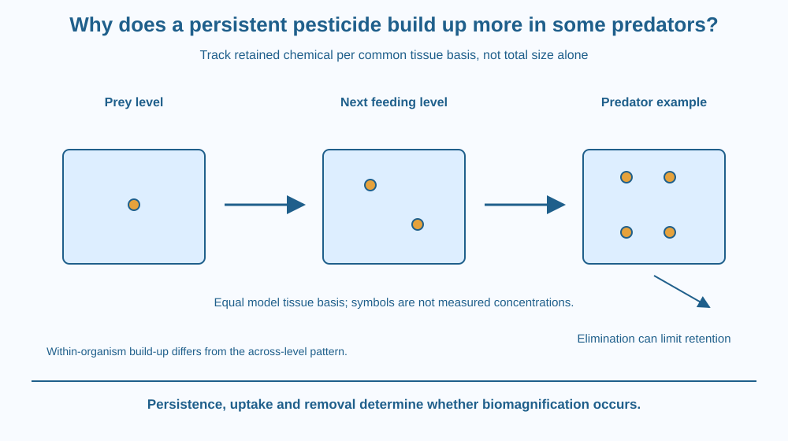

Explain why some persistent substances can increase in concentration across feeding levels. Distinguish bioaccumulation within an organism from biomagnification across a food chain. Track uptake, elimination and body-mass basis without assuming that every pesticide or every predator follows the same pattern.
A contaminant occurs at a low concentration in small prey, yet a predator can have a higher concentration in its tissues. The predator did not manufacture the chemical by becoming larger or moving upward in a diagram.
It consumed material containing the substance and may have eliminated or transformed it slowly. Repeated intake can therefore lead to retained contamination, with consequences for the concentration per unit body mass.
The useful question is how the chemical moves and persists, not just which organism eats which. That makes this lesson different from a general food-chain explanation.
Persistence means a substance resists breakdown under relevant environmental conditions. A persistent material can remain available for exposure longer than one that is rapidly transformed, though persistence depends on conditions and chemical properties.
Bioaccumulation occurs when uptake from food and the environment exceeds removal sufficiently for a substance to build up within an organism. The balance includes elimination, metabolism, growth and changes in exposure.
Some persistent substances associate with tissues such as body fat and are not readily eliminated. That can make them available for transfer when the organism is eaten. These properties differ between chemicals, so the word pesticide alone does not predict the outcome.
Biomagnification refers to increasing concentration at successive feeding levels in an appropriate food-chain comparison. It is a pattern across organisms, not merely an increase in one individual's body over time.
A predator consumes many prey during its life. If the contaminant is retained while much of the food's other material is processed, used or lost, the predator's tissue concentration can rise relative to prey. No new contaminant mass needs to be created.
Concentration must use a defined basis, such as contaminant mass per tissue mass. Comparing total contaminant in a large animal with total in a tiny prey is not by itself a biomagnification test. The denominator and sampled tissue matter.
Not all persistent chemicals biomagnify equally, and not every feeding comparison shows an increase. Metabolism, elimination, growth, diet and chemical properties can alter the pattern. A diagram should therefore show a conditional mechanism rather than a universal law for all pollutants.
DDT-related substances and certain other persistent organic pollutants are familiar historical examples in environmental education. This lesson does not state current Indian pesticide rules, provide food-consumption advice or assign an unsupported concentration to any real fish or bird.
Draw contaminant tokens entering one organism repeatedly and smaller token flows leaving it. If intake exceeds removal over the model interval, retained tokens increase. That is the within-organism accumulation idea.
Next connect several feeding levels and compare tokens per equal model tissue unit, not total tokens per differently sized animal. The normalised comparison is what makes the concentration pattern interpretable.
Add a chemical that is rapidly removed in a counterexample. Its pattern can differ even in the same feeding network. The model shows why chemical behaviour belongs alongside ecology rather than treating a higher trophic position as a machine that automatically multiplies every substance.
The SVG shows a simple feeding sequence with persistent-contaminant symbols transferred along it. Separate uptake and elimination arrows accompany an individual predator panel.
The concentration markers use a common illustrative tissue basis, with no real numerical pesticide values. A caption distinguishes bioaccumulation from biomagnification and notes that the pattern is conditional.
The graphic is not a measured ecosystem survey or a current food warning. It also does not repeat a fixed energy-transfer percentage, because contaminant retention and energy flow are different quantities with different accounting.

Environmental investigations can examine water, sediment and tissues to understand contaminant movement. Different sampling media answer different questions, and one water reading alone may not describe a long-lived organism's exposure history.
In India, students may encounter historical examples in textbooks or reports. A lesson should keep the documented example separate from a claim about a currently sold product or a specific local fishery.
Do not collect wildlife tissue, sample polluted water or alter eating habits based on a classroom diagram. Actual exposure and food decisions require relevant current evidence and authoritative guidance, beyond this mechanism model.
Use paper and small drawn contaminant symbols. No chemical or biological sample is needed.
Label the symbols illustrative, not measured concentrations. Do not claim the token count represents a real ecosystem. The exercise tests mass tracking and denominator choice while separating individual accumulation from a cross-level comparison.
Why can a large predator contain more total contaminant without necessarily having a higher concentration than a small prey? State the missing normalisation.
Now imagine the predator rapidly transforms the chemical into products that are eliminated. How could that affect the expected pattern? A complete mechanism includes removal pathways, not only the dramatic input arrows.
What does bioaccumulation describe?
Answer: A — Bioaccumulation tracks retention within the organism over relevant conditions and time.
Why can some contaminants become more concentrated in predators?
Answer: B — Chemical persistence and limited removal can support concentration increases across feeding levels.
A larger animal has more total contaminant. What is still needed to assess biomagnification?
Answer: C — Total amounts alone do not normalise for different organism sizes and sampled tissues.
Create a comparison chart for bioaccumulation and biomagnification. Include the level of comparison, uptake and removal, and the concentration basis.
Add one case where the upward-chain pattern would be weaker or absent. Your explanation must not claim that all pesticides behave identically or invent numerical contamination levels for actual species. Keep a clear boundary between a mechanism diagram and an exposure assessment.
Material and energy do not have to follow the same pattern through a feeding network. A retained chemical can become more concentrated while much of the prey's other material and usable energy follows different routes. Following the particular substance is essential; a general arrow labelled food leaves too much unspecified.
Some persistent chemicals can accumulate when uptake exceeds removal and biomagnify across feeding levels, but the pattern depends on chemistry, biology and a consistent concentration basis.